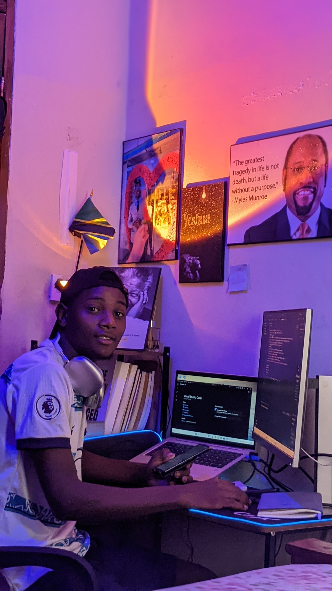

IT Support & Technicians
Ukarabati wa kompyuta, usanidi wa mifumo, na huduma za kiufundi kwa ofisi, shule, na watu binafsi.
NexaFlow Digital Services
Mwanafunzi wa mwaka wa pili wa BSc. Information Technology, Software Developer, na IT Consultant kutoka Tanzania — nikijenga mifumo, tovuti, na huduma za kidijitali zinazolenga matatizo halisi ya jamii yetu.

Kuhusu Mimi
Naitwa Faraja Mbeti. Kwa sasa ninasoma mwaka wa pili wa Bachelor of Science in Information Technology, huku nikijenga NexaFlow Digital Services — kampuni ndogo ninayotoa huduma za nyaraka za serikali, programu za elimu, na huduma mbalimbali za kidijitali kwa jamii ya Watanzania.
Nje ya darasa, muda wangu mwingi huenda kwenye kuandika code, kubuni mifumo inayotatua matatizo ya kila siku — kutoka usafiri wa daladala hadi bei za mazao sokoni — na kufundisha wenzangu stadi za kompyuta kwa lugha ya Kiswahili. Nina hamu kubwa ya kuona kizazi kijacho cha wataalamu wa IT Afrika Mashariki kikijengwa na jamii yetu wenyewe.
Huduma
Huduma za IT zenye viwango vya kitaalamu, kwa bei rafiki kwa wanafunzi, biashara ndogo, na taasisi.
Ukarabati wa kompyuta, usanidi wa mifumo, na huduma za kiufundi kwa ofisi, shule, na watu binafsi.
Msaada wa haraka wa kiufundi kwa njia ya mtandao — popote ulipo, tunatatua tatizo bila kusubiri safari.
Usanifu na usanidi wa mitandao ya ofisi na nyumbani — routers, switches, na usalama wa mtandao.
Ujenzi wa tovuti, mifumo, na programu za simu zinazoendana na mahitaji halisi ya biashara yako.
Ushauri kuhusu mikakati ya kidijitali, uchaguzi wa teknolojia sahihi, na jinsi ya kukuza biashara yako kwa IT.
Kila biashara ina mahitaji yake. Tuongee kuhusu tatizo lako, tutakupa suluhisho linalokufaa.
Wasiliana nami →Miradi
Miradi halisi inayolenga matatizo ya kila siku ya Watanzania — kutoka usafiri hadi afya na biashara.
Programu ya kutafuta njia za daladala jijini Mwanza — inasaidia wasafiri kupata njia sahihi haraka.
Mfumo unaosaidia kupunguza ucheleweshaji wa huduma za afya ya mama kwa kufuatilia "Three Delays Model".
Mfumo wa kufuatilia bei za mazao sokoni Tanzania, kuwasaidia wakulima na wafanyabiashara kupanga bei.
Tovuti ya kampuni yenye kurasa nyingi na blog — imejengwa kwa HTML5 na CSS3 tu, bila frameworks.
Mfumo wa kufuatilia kiwango cha gesi kwa kutumia ESP32 na load cell sensors — huwatahadharisha watumiaji mapema.
Jukwaa la huduma za nyaraka za serikali na huduma za kidijitali kwa jamii, chini ya NexaFlow.
Blog
Ninaandika kuhusu teknolojia, AI, na stadi za IT kwa lugha ya Kiswahili — kwa ajili ya jamii ya wasomaji wa Afrika Mashariki.
Uchambuzi rahisi kuhusu tangazo jipya la Anthropic la kuweka "alama za maji" kwenye maudhui yanayotengenezwa na AI, na maana yake kwa watumiaji wa kawaida.
Soma zaidi →Mwongozo wa msingi kuhusu Class A/B/C networks, CIDR, na jinsi ya kubadilisha namba za IP kwenda hexadecimal.
Soma zaidi →Tofauti kati ya aina tatu kuu za mitandao ya switching, na jinsi zinavyofanya kazi nyuma ya pazia ya intaneti.
Soma zaidi →Vitabu
Nimeandika vitabu vinavyolenga kusaidia wanafunzi na jamii kuelewa dunia ya teknolojia kwa lugha rahisi.
Mwongozo wa kwanza wa mfululizo wa vitabu vinne — unaowasaidia wanafunzi wa IT Afrika kuanza safari yao ya kazi kwa ujasiri.
Pata KitabuKitabu cha pili cha mfululizo — kuhusu jinsi ya kujenga na kuzindua bidhaa za kidijitali kutoka mwanzo hadi mwisho.
Soma ZaidiWasiliana
Niko tayari kukusaidia — kwenye mradi wa software, tatizo la mtandao, au tu kuulizia ushauri wa IT.